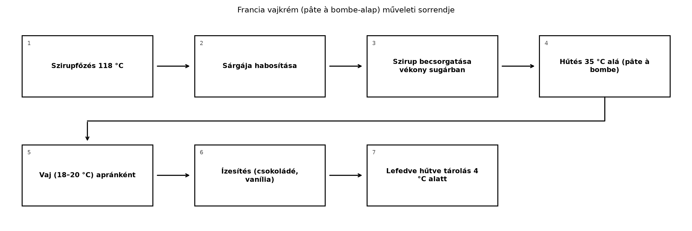
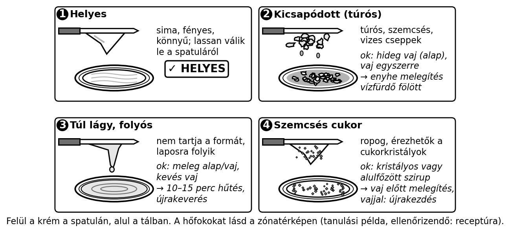

Képzeld el, hogy esküvői torta rendelés érkezik: hagyományos, vajkrémes, kávés ízesítéssel. A műhelyben reggel elkészíted a krémet, de amikor a vajat beleadagolod a felvert tojásos alaphoz, a massza hirtelen kicsapódik: apró, vizes szemcsék jelennek meg, a krém túrószerűvé válik. A hibát akkor tudod azonnal javítani, ha érted, miért bomlott meg az emulzió. Ha nem javítod ki, az egész tétel mehet a hulladékba, és a torta rendelési határideje is veszélybe kerül.
A vajkrém a cukrászat egyik legalapvetőbb tölteléke és bevonó anyaga. Használjuk torták kenésére, szeletek töltésére, minyonok alapjára, tekercsekbe és díszítésre. Minden egyes típus arra az elvre épül, hogy a cukrot, a tojást (vagy habot) és a vajat olyan sorrendben dolgozzuk össze, hogy lágy, selymes, mégis formázható emulzió jöjjön létre. A vajkrém hibái szinte mindig a hőmérséklet-illesztés és az emulzióképzés megsértésére vezethetők vissza.
Tekintsd a főzött vajkrémet úgy, mint egy finom, levegővel töltött vizes-zsíros rendszert. A keverés során a tojássárgája lecitinje a vaj zsírját apró cseppekre oszlatja, a cukor pedig csökkenti a víz fagyáspontját és stabilizálja a szerkezetet. Amikor a vaj és az alap hőmérséklete egyezik, a zsírcseppek egyenletesen oszlanak el, és a massza fényes, sima lesz. Ha a hőmérséklet vagy az adagolás hirtelen változik, a zsír összeolvad, a víz kiválik – ezt látjuk kicsapódásként. Képzeld el úgy, mint amikor a salátaöntet szétválik: megfelelő eréllyel és hőmérsékleten keverve újra összeáll, de túl gyors mozdulattal visszaesik.
Definíció. A vajkrém (franciául crème au beurre) olyan töltelék vagy bevonó krém, amelynek zsírtartalmát túlnyomórészt vaj adja, szerkezetét pedig legalább egy emulziós és/vagy habkomponens (tojássárgája, tojáshab, olasz hab, főzött alap) biztosítja. A vajkrémek lágyak, jól formázhatók, és hűtve dermednek.
Szabály. A vajkrémek három fő csoportját a felhasznált tojás- vagy habalap szerint különböztetjük meg: - Főzött vaníliás vajkrém (alapja gyakran főzött sárgakrém vagy tojássárgás „creme” alapon nyugszik): lágy, pudingos jellegű, sárgájában gazdag. - Francia vajkrém (pâte à bombe): tojássárgáját forró cukorsziruppal verünk fel, majd vajat adunk hozzá. Ez a legismertebb, kávés és csokoládés ízesítésre kiváló. - Olasz habcsókos vajkrém (meringue italienne + vaj): olasz habot készítünk forró cukorsziruppal, majd vajat adunk hozzá. Ez könnyebb, stabilabb, és jól színezhető.
Mindegyik ugyanazt a vizes–zsíros emulziós logikát követi: az oldott cukor védi a tojásfehérjét vagy sárgáját, a vaj lassan épül bele, és a keverés pótolja a hiányzó levegőt is.
Higiénia. A vajkrémek tejterméket és tojást tartalmaznak. Vajkrémhez pasztőrözött tojástermékből dolgozunk, vagy a hőkezelést hőmérővel igazolt hőfok–idő párral végezzük; a forró szirup csökkenti a mikrobaszámot, de nem garantált pasztőrözés (ellenőrizendő: üzemi HACCP-terv, NÉBIH-útmutató). A kész krémet hűtőtérben tárold, a kikenést és a felhasználást megelőzően tartsd 4 °C alatt (ellenőrizendő: gyártói és hatósági ajánlott hőmérséklet). A krémet nem szabad szobahőmérsékleten több órát állni hagyni, mert a tej- és tojásfehérjékben a baktériumok gyorsan szaporodnak.
A vajkrém készítés minden fajtája az alábbi sémát követi:
A hőmérséklet-illesztés a vajkrém legfontosabb hibaforrása. A zónatérkép a vaj és az alap hőfokából mutatja a várható állapotot: hideg vajjal túrós, kicsapódott, 35 °C fölötti alappal vagy túl meleg vajjal lágy, folyós krém lesz; a HTML-kiadásban két csúszkával kipróbálható, és a kalkulátor a javítás irányát (enyhe melegítés vagy hűtés) is kiírja.
Példa: francia vajkrém alaplépései. Készíts pâte à bombe-ot: 150 g tojássárgáját habosíts fel, majd önts hozzá kb. 118 °C-ra főzött cukorszirupot (200 g cukor, 100 g víz) vékony sugárban, folyamatos keverés mellett. Keverd addig, amíg a massza kihűl 35 °C alá. Ezt követően adj hozzá 500 g lágy vajat, egyszerre legfeljebb 50 g-ot, minden adagot alaposan eldolgozva. A kész krémet ízesítheted kávékivonattal, csokoládéval vagy pörkölt dióval.
Figyelem. A forró cukorszirup (110–120 °C) súlyos égési sérülést okoz. A szirupot soha ne öntsd hideg, vizes tálba, és a keverőtárat ne hagyd felügyelet nélkül. A krémkészítéshez használt habverőgép védőrácsát nem szabad eltávolítani; a gépi művelet csak oktatás után, felügyelet mellett végezhető (Biztonsági korlát).
Ízesítési útmutató (tájékoztató, a mennyiségek a kész krém tömegére vonatkoznak, ellenőrizendő a konkrét recept alapján): - Csokoládé (Dobos krém): 80–120 g olvasztott, 30 °C-os étcsokoládé vagy 20–30 g kakaópor + 40–60 g cukor a krém 1 kg-jára. A csokoládét a krém legvégén keverd bele, ne melegen. - Kávé: 10–20 ml erős presszókávé vagy 5–8 g instant kávé kevés vízben oldva, 1 kg krémre. A kávé keserűségét cukorral kell kiegyensúlyozni. - Dió: 100–150 g finomra darált, szárazon megpirított dió 1 kg krémre, a legvégén keverve. - Gesztenye: 150–200 g gesztenyemassza (szitán áttört, édesített) helyettesítheti a krém egy részét; könnyebb, lágyabb lesz. - Praliné: 100–150 g mogyoróból vagy mandulából készült karamellizált massza, ledarálva, a vaj hozzáadása előtt a tojásalaphoz keverve.
Tárolás és felhasználás. A kész vajkrémet hűtve, lefedve 1–2 napig tárolhatod (ellenőrizendő: a termék összetételétől és a helyi előírásoktól függ). Felhasználás előtt szobahőmérsékleten 10–20 percig lágyítsd, vagy nagyon alacsony fokozaton keverd át. Vajkrém töltésre, torta kenésére, bevonás előtti alapozásra és díszítésre is alkalmas. A bevont terméket hűtve, zárt térben tárold.
Számítás. Egy 24 cm-es tortához 750 g francia vajkrémet szeretnél. Az alaprecept 1 000 g nyersanyagból kb. 930 g kész krémet ad (a 118 °C-ra főzött szirup kb. 88% cukrot tartalmaz, ezért 200 g cukor mellett csak víz marad, kb. 73 g elpárolog): - tojássárgája: 150 g - cukor: 200 g - víz: 100 g - vaj: 500 g - csokoládé: 50 g
A bemért összes tömeg: .
A szorzószámot a kész krém tömegére számoljuk: .
A szükséges anyagok:
| Nyersanyag | Alap (g) | Szorzó | Szükséges (g) |
|---|---|---|---|
| Tojássárgája | 150 | 0,81 | 121 |
| Cukor | 200 | 0,81 | 162 |
| Víz | 100 | 0,81 | 81 |
| Vaj | 500 | 0,81 | 405 |
| Étcsokoládé | 50 | 0,81 | 40 |
| Összes nyersanyag | 1000 | 0,81 | 809 |
Tehát a tortához 750 g kész krémhez 405 g vajat, 121 g sárgáját, 162 g cukrot, 81 g vizet és 40 g csokoládét mérsz be (összesen kb. 809 g nyersanyag). Ellenőrzés: a szirupban kb. víz elpárolog, így kész krém marad (ellenőrizendő a receptúra szerinti veszteség).
Számítás. Szeretnéd megtudni, mennyi vaj van 1,2 kg kész olasz habcsókos vajkrémben, ha az alábbi arányok érvényesek (tömegszázalék): olasz hab 45 %, vaj 50 %, étcsokoládé 5 %. A kész tömeg 1,2 kg = 1200 g.
Ellenőrzés: . Tehát 1,2 kg krémhez 600 g vaj szükséges.
Jogszabály. A vajkrémek előállítása során be kell tartani az általános élelmiszer-higiéniai előírásokat (852/2004/EK rendelet). Ha a krém nem kap igazolt hőkezelést, pasztőrözött tojástermék használata szükséges (ellenőrizendő: hatályos előírás). A kész krémben a tejet és tojást allergénként fel kell tüntetni a vendégek számára (1169/2011/EU rendelet, II. melléklet: a 14 allergéncsoport közül – pl. glutén, tojás, tej, diófélék, földimogyoró, szója, szezám, kén-dioxid/szulfitok – a vajkrémben jellemzően a tojás és a tej fordul elő; ellenőrizendő: teljes lista). A vajkrém hűtve tárolása hűtési lánc alá tartozik; a pontos hőmérsékletet és időt a NÉBIH jó higiéniai gyakorlat útmutatói és a termék gyártói adatlapja határozzák meg (ellenőrizendő).
Szabály. Nyers tojást tartalmazó vajkrémet ne készíts. A forró cukorszirup (110–120 °C) csökkenti a mikrobaszámot, de a becsorgatás közben gyorsan hűl, ezért nem garantált pasztőrözés (lásd Tojáskrémek II: tojáshabkrémek és habcsókfélék); a francia és az olasz habcsókos vajkrémhez pasztőrözött tojássárgáját, illetve tojásfehérjét használunk, vagy hőmérővel igazolt hőfok–idő párral hőkezelünk (ellenőrizendő: üzemi HACCP-terv, NÉBIH-útmutató). A főzött vaníliás vajkrém alapját a Tojáskrémek I: főzött sárgakrém és vaníliakrém alfejezet egységes CCP-je szerint kezeljük: felforralás és 2–5 perc lassú forralás (tanulási példa, ellenőrizendő).
Készíts kb. 930 g francia vajkrémet (pâte à bombe + vaj; 1 005 g nyersanyagból) édes, vaníliás-csokoládés változatban, hogy megtanuld az emulzió képzését és a hőmérséklet-illesztést.
Munkaruha, hajháló, ékszer nélkül moss kezet, ellenőrizd az eszközök tisztaságát. Pasztőrözött tojássárgáját használunk; ha héjas tojással dolgozol, a héjat a feltörés előtt az üzemi HACCP-terv szerint kezeld, és a sárgáját csak tiszta edénybe válaszd ki. A tojásfehérjét felhasználásig lefedve hűtőbe tedd. A munkafelületet fertőtlenítsd.
A cukorszirup forrón veszélyes. A habverőgépet csak oktatás után, védőráccsal használd. Soha ne nyúlj a forgó habverőbe. A forró edényt hőálló kesztyűvel fogd meg.
Technológiai lap.
Termék neve: Francia vajkrém (pâte à bombe alapú), csokoládé ízesítéssel
Alapmennyiség: 1 005 g nyersanyag, a szirupfőzés vízvesztesége után kb. 930 g kész krém
| Nyersanyag | Mennyiség (g) | Megjegyzés |
|---|---|---|
| Tojássárgája | 150 | pasztőrözött tojástermék |
| Kristálycukor | 200 | szirup főzéséhez |
| Víz | 100 | szirup hígításához |
| Vaj | 500 | 82 % zsírtartalmú, lágy (18–20 °C) |
| Étcsokoládé | 50 | olvasztva, 30 °C-on |
| Vaníliás cukor / paszta | 5 / 2 | ízesítés |
| Összes nyersanyag | 1 005 | a vanília tömegét is beleszámítva; kész krém kb. 930 g |
Eszközök: habverőgép, cukorhőmérő, lábas, spatula, mérleg.
Műveleti sorrend: 1. A cukrot és a vizet keverd össze, majd forrald 118 °C-ra (lágy golyó próba, ellenőrizendő: pontos hőfok a receptúra szerint). A szirupot ne keverd tovább, hogy ne kristályosodjon. 2. A tojássárgáját kezdd el habosítani közepes fokozaton, amíg halvány, krémes nem lesz. 3. A forró szirupot vékony sugárban, folyamatos keverés mellett öntsd a sárgájához. Vigyázz, hogy a tál szélére ne folyjon. 4. Keverd tovább, amíg a massza kihűl 35 °C alá (tapintásra langyos). Ez a pâte à bombe. 5. A vajat apránként (3–4 részletben) add hozzá, minden adagot teljesen eldolgozva. 6. Amikor a krém sima és fényes, add hozzá az olvasztott csokoládét és a vaníliát, majd utolsó 30–60 másodpercig keverd. 7. A kész krémet azonnal használd fel, vagy légmentesen lefedve tedd hűtőbe.

Kritikus pontok: pasztőrözött tojássárgája átvétele és hűtött tárolása (a forró szirup nem garantált pasztőrözés); a vaj és az alap hőmérséklet-illesztése; a kész krém hűtve tárolása 4 °C alatt.
Allergének: tojás, tej; étcsokoládé esetén szója (emulgeálószer) és tej; diófélék, ha a csokoládé keresztkontaminált.
Minőségi jellemzők: sima, fényes felület; lágy, formázható állag; egyenletesen eloszlatott levegő; jellegzetes vajas-csokoládés íz, keserű mellékíz nélkül.
Tárolás, eltarthatóság: hűtve, lefedve 1–2 nap (ellenőrizendő: pontos időtartam a gyártói előírás szerint).
A vajkrémet érzékszervi bírálattal és tömegméréssel ellenőrizd. Kóstolás előtt ellenőrizd a hőmérsékletet (ne legyen meleg, de ne legyen jég hideg). A krém felülete legyen egységes, nem fénylő zsírosan, de nem is matt, vizesen. A metszetben apró légbuborékok látszanak, de nem folyhat ki víz. A tömeg 1 liter krém kb. 850–950 g (ellenőrizendő: a levegőtartalom függvényében), az adott recept össztömegéhez képest az eltérés legfeljebb ±5 % legyen.
A négy állapot ránézésre megkülönböztethető: a helyes krém sima és fényes, a kicsapódott túrós és vizes, a túl lágy laposra folyik, a szemcsés cukor apró kristályokat mutat. A javítás iránya (melegítés vagy hűtés) ezen múlik.

Tünet: a krém szétválik, apró zsírszemcsék úsznak vizes fázisban. Ok: a vaj túl hideg (hűtőhideg) volt, vagy az alap túl hideg, illetve a vajat túl gyorsan, nagy darabokban adtad hozzá. Megelőzés: az alapot mindig 35 °C alá hűtsd, a vajat 18–20 °C-ra temperáld, és kisebb adagokban keverd bele. Javítás: enyhe melegítés: először próbáld alacsony fokozaton, meleg vizes tál fölé helyezve (nem közvetlen lángra!) keverni, hogy a zsír lágyuljon. Ha nem áll össze, vegyél ki egy kis adagot, melegítsd enyhén, majd keverd vissza. Végső esetben adj hozzá 1–2 evőkanál pasztőrözött tejszínt vagy tojásfehérjét, de tudd, hogy a krém állaga lágyabb lesz.
Tünet: a krém nem tartja formáját, laposra folyik. Ok: az alap 35 °C-nál melegebb volt, a vaj túl lágy vagy megolvadt, túl sok a folyadék, vagy kevés a vaj. Megelőzés: tartsd a vaj és az alap hőmérsékletét az előírt tartományban, és ne melegítsd túl a kész krémet. Javítás: hűtés (a meleg alap okozta hibát melegítéssel nem lehet javítani): tedd a krémet 10–15 percre hűtőbe, majd alacsony fokozaton keverd át; ha még mindig lágy, adj hozzá kis adag hideg vajat.
Tünet: ropog, érezhetők a cukorkristályok. Ok: a cukorszirup túl gyorsan hűlt, és a cukor kikristályosodott a főzés közben, vagy a szirup nem érte el a megfelelő hőfokot. Megelőzés: a szirupot ne keverd forralás közben, az edény falára ragadt cukrot nedves ecsettel töröld le, és a hőmérőt használd. Javítás: ha még nincs vaj a krémben, melegítsd enyhén a masszát, és keverd, amíg a kristályok feloldódnak; ha már vaj is van, a krém menthetetlen, jobb újra kezdeni.
Egy cukrászda nyári napon 30 adag kávés minyont készít francia vajkrémmel. A tanuló a tojássárgáját felverte, a szirupot 118 °C-ra főzte, de a keverőgép lassú fokozatát választotta, és a hűtőhideg vajat egyszerre, nagy tömbben dobta a sárgájához. A krém azonnal kicsapódott, túrószerű lett. A műhelyvezető megállította, a tálat meleg vízfürdő fölé helyezte, és alacsony fokozaton folyamatosan keverte. Néhány perc alatt a vaj megolvadt, az emulzió újra összeállt. Ezután a krémet hideg vízfürdőre állítva tovább keverték, hogy visszahűljön. A hibát sikerült javítani, de a krém kissé tömörebb lett. A tanulság: a hőmérséklet és az adagolás a vajkrém két kritikus pontja.
1. feladat (A) Sorold fel a vajkrémek három fő típusát, és mindegyiknél nevezd meg az alapot!
2. feladat (A) Miért fontos a hőmérséklet-illesztés a vajkrémkészítésben? Írd le 3 mondatban.
3. feladat (B) Egy alaprecept 1 kg kész vajkrémre: vaj 500 g, tojássárgája 150 g, cukor 180 g, víz 80 g, ízesítő 90 g. Az összes bemért tömeg 1000 g. Számold ki, mennyi anyag kell 1,4 kg kész krémhez! (A főzési veszteséget most 0 %-nak vesszük.)
4. feladat (B) Készíts 850 g olasz habcsókos vajkrémet a következő összetétellel: olasz hab 45 %, vaj 50 %, étcsokoládé 5 %. Hány gramm kell az egyes komponensekből?
5. feladat (C – hibaelemzés) A tanuló francia vajkrémet készített, de a krém kicsapódott: túrós, vizes lett. Sorold fel a lehetséges okokat és a megfelelő javítási lépéseket. Melyik hibát nem tudod javítani?
6. feladat (D – gyakorlat) Készítsd el a gyakorlati útmutatóban szereplő francia vajkrémet, kisebb adagban (500 g kész krémre átszámítva, ). Töltsd ki a technológiai lapot a ténylegesen bemért anyagokkal és a mért hőfokokkal. Értékeld a kész krémet az alábbi szempontok szerint: felület, állag, légzárványok, íz, hőmérséklet.
Önellenőrzés – válaszok: 1. Hamis. A francia vajkrém alapja pâte à bombe (tojássárgája forró sziruppal), nem tojáshab. 2. . 3. Mert 18–20 °C-on a vaj plasztikus, a zsírcseppek aprók maradnak, és az emulzió stabil. 4. Meleg vizes tál fölé helyezve, alacsony fokozaton keverni; ha kell, kivenni egy adagot, melegíteni, visszakeverni; végső esetben pasztőrözött tejszínt vagy tojásfehérjét adni hozzá. 5. Tojás, tej.
1. feladat megoldása: - Főzött vaníliás vajkrém: alapja főzött sárgakrém vagy hasonló tojásos puding. - Francia vajkrém: pâte à bombe (tojássárgája + forró cukorszirup). - Olasz habcsókos vajkrém: olasz hab (tojásfehérje + forró cukorszirup).
2. feladat megoldása: A vaj és az alap hőmérsékletét össze kell hangolni, mert a vaj melegen megolvad, hidegen túl kemény lesz, és egyik esetben sem alakul ki finom emulzió. Az ideális a vajnak 18–20 °C, az alapnak 35 °C alatti hőmérséklete. Ha túl nagy a különbség, a zsír kicsapódik, és a krém túróssá válik.
3. feladat megoldása: Adott: 1 kg kész krém összetevői. Cél: 1,4 kg. Szorzószám: . Így: - Vaj: - Tojássárgája: - Cukor: - Víz: - Ízesítő: Ellenőrzés: .
4. feladat megoldása: - Olasz hab: - Vaj: - Étcsokoládé: Ellenőrzés: .
5. feladat megoldása: Lehetséges okok: - A vaj túl hideg volt, vagy az alap túl hideg (kicsapódás; javítás enyhe melegítéssel). - Az alap 35 °C felett volt, vagy a vaj megolvadt (lágy, folyós krém; javítás hűtéssel). - A vajat túl gyorsan, nagy darabokban adták hozzá. - A keverési sebesség túl alacsony. Javítás: - Meleg vizes tál fölé helyezve, alacsony fokozaton keverni, amíg összeáll. - Ha nem, kisebb adagot kivenni, enyhén melegíteni, visszakeverni. - Végső esetben 1–2 ek. pasztőrözött tejszínt adni hozzá. Nem javítható: ha a krémben durva cukorkristályok vannak, és a vaj már benne van, akkor a kristályok nem oldódnak fel a vajban, ezért a krém nem menthető.
6. feladat megoldása: A tanuló átszámolja a receptet 500 g kész krémre: minden nyersanyag tömegét a szorzóval szorozza. Elkészíti, méri a szirup hőmérsékletét, a sárgája hőmérsékletét a szirup hozzáadása előtt (35 °C alá kell hűlnie), a vaj hőmérsékletét. A technológiai lapon rögzíti a mért adatokat, a felhasznált anyagok pontos tömegét. Értékeli a krémet: felülete sima-e, állaga formázható-e, látszanak-e apró légbuborékok, íze nem túl vajas-e, hőmérséklete 20 °C alatt van-e. Az értékelési szempontok alapján pontoz: minden szempont 1–5 pont, a megjegyzés rovatba leírja a hibákat.
A vajkrémek a cukrászat selymes, formázható töltelékei és bevonói. Három alaptípusuk: a főzött vaníliás (főzött sárgakrém-alapú), a francia (pâte à bombe: tojássárgája forró cukorsziruppal) és az olasz habcsókos (meringue italienne forró sziruppal). Mindegyik lényege az emulzió: a vajat 18–20 °C-on, lágyan, apránként dolgozzuk a már kihűlt (35 °C alatti) tojásos vagy habos alaphoz. A kicsapódást hőmérséklet-illesztéssel és lassú adagolással kerüljük el; ha mégis megtörténik, enyhe melegítéssel, keveréssel és pasztőrözött tejszín vagy tojásfehérje hozzáadásával javítható. Ízesítés szerint adhatunk csokoládét (Dobos krém), kávét, diót, gesztenyét és pralinét. A kész krém hűtve, lefedve 1–2 napig áll el (ellenőrizendő). Továbbvitt eredmény: a vajkrémet torták kenésére, szeletek töltésére, tekercsekbe és minyonokba, valamint bevonás előtti alapozásra és díszítésre használjuk fel; ezt a Töltelékek anyaghányad-számítása és élelmiszerbiztonsága alfejezet, a Kikészített sütemények és torták: jellemzők és tortakészítési műveletek alfejezet és az Egyszerű díszítés: bevonás, burkolás, beszórás, felrakás, fecskendezés, formázás alfejezet viszi tovább.